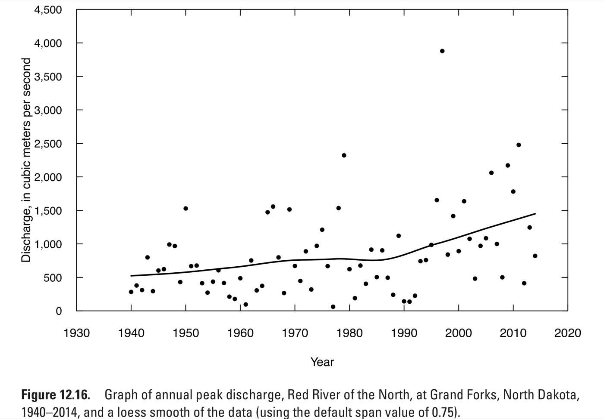
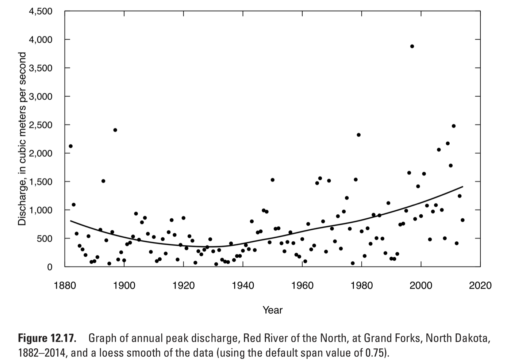

Week 06 Practice Problems (Optional)
We will work on these questions in class Wednesday.
Choosing a covariate for a future design
An analyst models annual maximum daily rainfall \(Y_t\) as a GEV whose location depends on a covariate \(X_t\):
\[ Y_t \mid X_t \sim \text{GEV}(\mu_0 + \mu_1 X_t, \sigma, \xi) \]
They fit the model four times, each with a different \(X_t\):
- the winter Niño 3.4 index, a measure of El Niño;
- the natural log of atmospheric CO2;
- the average summer temperature at the station;
- the year.
- What does \(\mu_1\) measure, and what does \(\mu_1 = 0\) say about rainfall?
\(\mu_1\) is how much the location of the annual maximum shifts for each unit increase in \(X_t\). If \(\mu_1 = 0\), the distribution does not depend on \(X_t\), and the model is an ordinary stationary GEV.
- Take \(X_t\) to be Niño 3.4, and suppose \(\mu_1 > 0\). Given the index in each year, do all years have the same distribution of rainfall?
No. Given \(X_t\), a year with a high index has a location of \(\mu_0 + \mu_1 X_t\), larger than a year with a low index, so each year has its own distribution. The years are independent given \(X_t\) but not identically distributed.
A county asks for the 100-year daily rainfall in 2070, which requires the value of \(X_{2070}\).
- For which covariate is \(X_{2070}\) known exactly?
The year: \(X_{2070} = 2070\).
- Order the four covariates from the most to the least uncertain value of \(X_{2070}\), and give the reason for each position.
From most to least uncertain:
- Niño 3.4. It cannot be predicted more than about a season ahead, so for 2070 the analyst knows only its distribution, not its value.
- Local summer temperature. It needs an emissions scenario, then a climate model to turn the scenario into warming, then the local year-to-year variation on top of that.
- Log CO2. Given an emissions scenario it is set, so the only uncertainty is which scenario happens.
- Year. Known exactly.
One large value in a trend test
Two versions of a six-year record differ in one value (Helsel et al., 2020):
| \(t\) | 1 | 2 | 3 | 4 | 5 | 6 |
|---|---|---|---|---|---|---|
| Record A | 10 | 40 | 30 | 55 | 62 | 56 |
| Record B | 10 | 40 | 30 | 55 | 200 | 56 |
The Mann-Kendall test and the regression slope test give:
| Mann-Kendall \(S\) | Mann-Kendall \(p\) | Regression slope | Regression \(p\) | |
|---|---|---|---|---|
| Record A | 11 | 0.039 | 9.2 per year | 0.024 |
| Record B | 11 | 0.039 | 21 per year | 0.23 |
- Which test’s result changed?
The regression slope test. The slope more than doubled and the \(p\)-value went from 0.024 to 0.23, while Mann-Kendall’s \(S\) and \(p\) are the same.
- Why did \(S\) stay the same?
\(S\) counts pairs where the later value is larger, minus pairs where it is smaller. The value in year 5 is larger than every earlier value and larger than year 6 whether it is 62 or 200, so no pair changes its order.
- Houston Hobby’s record includes Hurricane Harvey, a single day far above any other. Which test’s result depends less on how large that one day was?
Mann-Kendall, because it uses only the order of the values. Making Harvey larger or smaller, as long as it stays the largest, leaves \(S\) unchanged; the regression slope moves with it.
Trend or oscillation
The figures show annual peak discharge of the Red River of the North at Grand Forks, North Dakota, first for 1940-2014 and then for the full record, 1882-2014 (Helsel et al., 2020). The curve through the points follows the average of nearby years. The figures are from the U.S. Geological Survey and are in the public domain.


Both periods reject the null hypothesis of no trend:
| Period | Years | Mann-Kendall \(p\) | Regression slope (m³/s per year) |
|---|---|---|---|
| 1940-2014 | 75 | 0.0007 | 11.6 |
| 1882-2014 | 133 | 0.000006 | 5.5 |
Answer each part yes or no, and give the reason.
- Does the rejection on 1940-2014 show that peak flows rose along a straight line?
No. Mann-Kendall tests only whether later years tend to be larger than earlier ones. A straight line, a step, part of a slow oscillation, or wet and dry decades with no trend could each produce a rejection.
- Suppose you fit a straight line to 1940-2014 and run it backward. Would it match the peaks of the 1880s and 1890s?
No. The fitted line is at about 410 m³/s in 1940 and falls 11.6 m³/s for every year earlier, so by 1885 it is below zero, a negative flow. The 1880s and 1890s had peaks near 2,100 and 2,400 m³/s.
- Both tests assume independent years. If the river has wet decades and dry decades, are the \(p\)-values in the table too small?
Yes. Wet and dry decades make long runs of high or low years likely without any trend, and a test that assumes independent years reads those runs as a trend.
Reading a nonstationary GEV
Two GEV models are fit to 80 years of Houston Hobby annual maximum daily rainfall (1940-2025). Both put a straight-line trend in the location and keep the scale and shape fixed.
The trend in log CO2 model uses \(c_t\), the natural log of atmospheric CO2 in parts per million in year \(t\):
\[ Y_t \sim \text{GEV}(\mu_0 + \mu_1 c_t, \sigma, \xi) \]
with \(\hat\mu_0 = -59.3\) mm, \(\hat\mu_1 = 25.6\) mm, \(\hat\sigma = 34.5\) mm, and \(\hat\xi = 0.19\).
The trend in year model uses the year \(t\) itself:
\[ Y_t \sim \text{GEV}(\beta_0 + \beta_1 t, \sigma, \xi) \]
with \(\hat\beta_0 = -128.1\) mm, \(\hat\beta_1 = 0.110\) mm per year, and the same \(\hat\sigma\) and \(\hat\xi\) to the digits shown.
The two fits have almost the same log likelihood. Their locations and 100-year levels are:
| 1950 | 2025 | 2070, 500 ppm | 2070, 600 ppm | |
|---|---|---|---|---|
| Location, trend in log CO2 (mm) | 87.7 | 95.8 | 99.8 | 104.5 |
| 100-year level, trend in log CO2 (mm) | 341.3 | 349.3 | 353.4 | 358.0 |
| 100-year level, trend in year (mm) | 340.6 | 348.8 | 353.8 | 353.8 |
- In the model with a trend in log CO2, the 100-year level minus the location is about 253.5 mm in every column. Why?
Only the location carries the trend; \(\sigma\) and \(\xi\) are the same every year. The distribution slides up as CO2 rises without changing its shape, so every quantile moves by the same amount as the location.
- Why do the two models fit the record almost equally well?
Over 1940-2025, year and log CO2 rose together, so a line in one is nearly a line in the other. The record cannot tell them apart.
- Which model’s 2070 value depends on the emissions scenario?
The model with a trend in log CO2, which gives 353.4 mm at 500 ppm and 358.0 mm at 600 ppm. The model with a trend in year gives 353.8 mm under every scenario, because 2070 is 2070 whatever happens to emissions.
Risk over a mortgage with a rising flood chance
A house is bought with a 30-year mortgage. In the first year, the chance that floodwater reaches it is 1%. That chance rises in a straight line to 2% in year 30. Flooding in different years is independent.
| Yearly chance | Chance of at least one flood in 30 years |
|---|---|
| 1% every year | 26.0% |
| 1% rising to 2% | 36.5% |
| 1.50% every year | 36.5% |
- The flood map shows the house at the 1-percent flood level, drawn from this year’s chance. Is the homeowner’s risk over the mortgage higher than 26%?
Yes, 36.5%. The map uses this year’s 1%, and every later year has a higher chance.
- Which of Monday’s three definitions of the 1-percent flood does the map use?
The level today: the flood with a 1% chance this year.
- Is 1.50%, the steady chance with the same 30-year risk, close to the average of the thirty yearly chances?
Yes. The yearly chances average 1.5%. When a yearly chance \(p\) is small, the chance of no flood that year, \(1 - p\), is close to \(e^{-p}\). The chance of no flood in 30 years is then close to \(e^{-(p_1 + \cdots + p_{30})}\), which depends only on the sum of the yearly chances, so the steady chance with the same sum, their average, gives nearly the same risk.